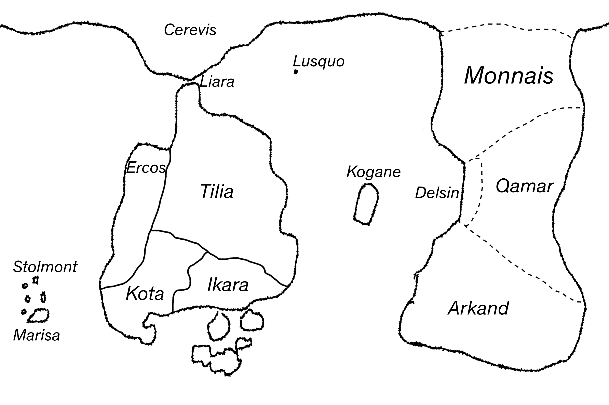

An Out-Of-Setting Introduction to Aetherworld
Aetherworld is a worldbuilding project. It exists partially to serve as a reusable setting for games, and partially (through this wiki) as a standalone creative work.
This page contains some general background information, which you can also pick up by exploring the wiki. If you’d rather do that, go to the index. Pages marked with ▲ are relatively complete and good places to start.
Chronology
The described history of aetherworld spans roughly 1000 years. The current focus is on the first half of the timeline, and later events will be described as they become relevant to other projects.
Much of the world is extremely socially and politically stable. The majority of countries and companies persist for centuries. This is an explicit design decision made to give aetherworld projects a shared identity by means of a relatively consistent cast of institutions that evolve over time. For example, Ikara is variously run by pirates, an authoritarian central government, and decentralized coalition of civil services.
Year 0 is defined by the Enchantment, an apparently-meteorological phenomenon during which persistent auroras were visible around the world. Since the Enchantment, the atmosphere has contained aether. The suffix ‘B.E.’ means ‘before Enchantment’. This wiki is not written from the perspective of any particular date. In general, present-tense descriptions refer to the ‘stable’ or ‘default’ state of things.
Aether
The central technological conceit is aether, a substance (kind of) found naturally at low concentrations in the air. Compressing air in a certain way produces aethercompressed air, which exerts unusually high force only when in motion. This phenomenon, known as mechanical aetherpower, allows aethercompressed air to be used as a universal fuel and mechanical power source in place of combustion engines, gunpowder, and electricity (which do not exist). Aethercompression is also required for semantic aetherpower.
Semantic aetherpower refers to the ability of aether to perform ‘semantically determined’ (i.e. magical) effects. These effects are quite limited in scope, and mostly stand in for electronic and mechanical tools that don’t exist in aetherworld. Effects are determined by the shape of airflow under certain conditions. (This is mostly handwaved right now.)
Wizards are people who can make use of semantic aetherpower without external tools, mostly by whistling. Anyone can become a wizard, but it’s a dangerous (especially in the early days) and difficult profession. Over time, wizardry shifts from an artisanal craft/hired fieldwork to the study and design of glyphs for industrial production. Since the mid-100s, aetheric items with pre-set effects are common consumer goods. This is accelerated by the invention of the triplex compressor in 346.
Technology
Much of the particular textures of different time periods come from technological developments. Important inventions include:
- Aetherpower itself, in year 0. This marks the start of the First Era.
- Phosgraph in 24
- Triplex Compressor in 346. This marks the start of the Second Era.
- Thruster aircraft (article WIP) in 432.
- CRP engine in 652. This marks the start of the Third Era.
- Universal Cassette Protocol in 902. This marks the start of the Fourth Era.
Very roughly, the First Era has a ‘tech level’ similar to the mid/late 19th and very early 20th centuries IRL, the Second Era is similar to the interwar period, and the Third Era is similar to the 1940s-1960s. The Fourth Era is currently underdeveloped but will be somewhat retrofuturist.
Notably, small mechanical engines are not invented until 652. Before this, vehicles are powered by massive (steam-engine-sized) engines (ships, landships), direct thrusters (airplanes, some experimental small water/land ships), or biological power (bicycles, horse-drawn carriages, rogsleds).

World map (click on images like this to expand them)

Countries and Geography
Aetherworld has two large continents connected over the north pole.
The western continent is called Lanteen, and it contains the countries of Liara, Tilia, Ercos, Kota, and Ikara. The Cormorant Strait separates Lanteen and Cerevis. Liara is a city-state built on a cluster of hundreds of islands in the Strait, which is a fast-moving and rocky river traversable by large ships only through the locks in Liara’s canal system. Etalameri is the southern sea, and (along with its islands) is part of the territory of Ikara. The Ikaran islands are difficult to navigate and (nearly always) home to pirates, so passage usually requires a bribe and/or naval escort. These two maritime chokepoints shape much of the political development of Lanteen. The southern border of Tilia is defined by the Fox River, and the border between Kota and Ikara is the uninhabited White River Forest. The eastern border of Ercos is a giant manmade wall (article WIP).
The eastern continent, Itaan, contains Monnais, Delsin, Qamar, and Arkand. There is a massive and extremely shallow continental shelf to the south and east of Arkand, blocking most sea travel, and most of Arkand’s population lives in the western half. The Irim Desert covers southern Qamar and extends into Arkand, and its adjacent savannas extend north into Monnais. Because of the low populations in these border regions (and a cultural lack of border enforcement across the world), national borders in Itaan are not particularly well-defined.
Kogane is an island in Laumeri, and Stolmont and Marisa share the Mirid Archipelago in Kylmeri.
The northern polar region, Cerevis, is home to ten somewhat interconnected non-industrialized tribes (article WIP). The southern polar region (below Etalameri and the Arkandic shelf) is wracked by storms and floating sheets of ice, and is generally not navigable.
Parastates
Parastates (parallel states) are non-state (or sub-state) entities that act like countries. In many cases, people would consider themselves to be loyal to or a citizen of a parastate in the same way that others would see themselves as part of a nation. The mechanics of parastates and their relationships with states vary. The political position of being anti-parastate (or sometimes only against supranational parastates) is known as sovereigntism. This is a relatively fringe position, and parastates usually have no negative connotation. Some notable parastates are:
- The Pax Centralis, a supranational alliance
- IPRO, initially a regulatory/safety agency
- Coachguard, the privatized military of Tilia
- The ONC, a global shipping company
- Syndicates in Arkand
- Kyros in Kota
- The Starlight Phosgraph Union